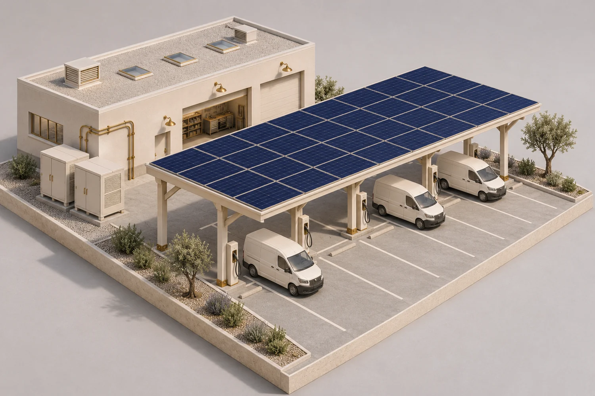
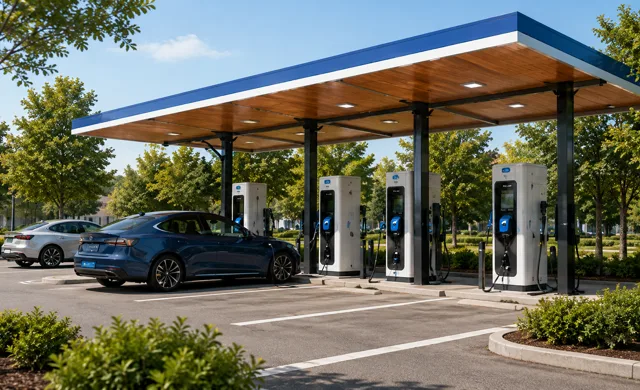
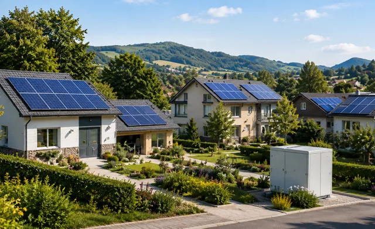
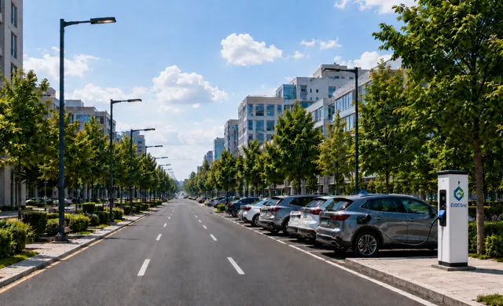

Hubs de carregamento
Mais carregadores com a potência disponível.
Engenharia e integração
Desenhamos a micro-rede à medida do seu local. Ao ligar carregadores, painéis solares e baterias em corrente contínua, é possível reduzir etapas de conversão e alimentar mais carregadores com a potência disponível.
Visualização conceptual
Mobilidade elétrica
Num projeto de raiz ou numa expansão, integramos equipamentos de diferentes fornecedores. O ponto de partida é o que precisa de alimentar e quando.

Bateria Cobertura solarAvaliamos o limite da ligação e os picos de carregamento. Uma bateria pode cobrir parte desses picos e reduzir a necessidade de reforçar a ligação.
Tecnologia
Um barramento DC liga solar, baterias e carregamento. A energia local ajuda a cobrir os picos de procura, com menos conversões entre AC e DC.
O EMS antecipa o preço da energia e a produção solar para decidir quando usar a bateria.
Explorar a tecnologiaA produção fotovoltaica injeta energia na micro-rede através da ligação DC.
A energia solar pode alimentar carregadores compatíveis sem uma conversão intermédia para AC.
Quando aumenta a procura, a bateria pode fornecer parte da potência necessária e aliviar a ligação à rede.
A micro-rede DC
Um barramento DC integra os ativos. A produção solar e a bateria ajudam a alimentar novas cargas dentro da potência disponível no local.
O EMS usa previsões horárias do preço da eletricidade e meteorologia a sete dias para gerir o solar e decidir quando carregar ou descarregar a bateria.
A produção local e a bateria podem cobrir parte da procura e reduzir a potência pedida à rede.
Ativos compatíveis partilham o barramento DC e evitam etapas de conversão entre AC e DC.
Acrescente carregamento, produção ou armazenamento à medida que as necessidades evoluem.

Planeie o carregamento a partir da potência disponível no local. Solar e armazenamento podem cobrir parte dos picos e ajudar a reduzir as intervenções na ligação.

Coordene produção, armazenamento e consumo numa rede local.

Avalie a adaptação de uma rede de iluminação ao contexto do município.
Consultar mapa de investimentoLevantamos a potência disponível, o perfil de carregamento e os ativos que podem ser reaproveitados.
Comparamos cenários de carregamento, produção e armazenamento e identificamos as intervenções necessárias.
A solução é dimensionada para simplificar a obra e a ligação sempre que possível. Os prazos e requisitos de licenciamento e ligação dependem do local e do operador de rede aplicável.
Iluminação pública
Explore a estimativa para uma rede DC de iluminação pública em Portugal continental.
Portugal continental
Investimento estimado em DC
A carregar…Estimativa indicativa de investimento.
Modelo do estudo de caso do Areeiro. O número de lâmpadas é agrupado em circuitos de até 300 e multiplicado pelo custo de referência de 158 940 € por circuito DC.
Fonte de cadastro: E‑REDES. O valor depende do dimensionamento e das condições do local.
Selecione no mapa ou nas listas.
Contacto
Que equipamentos quer ligar agora e o que prevê acrescentar mais tarde? A nossa equipa acompanha o projeto desde o desenho da rede e continua a dar apoio durante a operação.